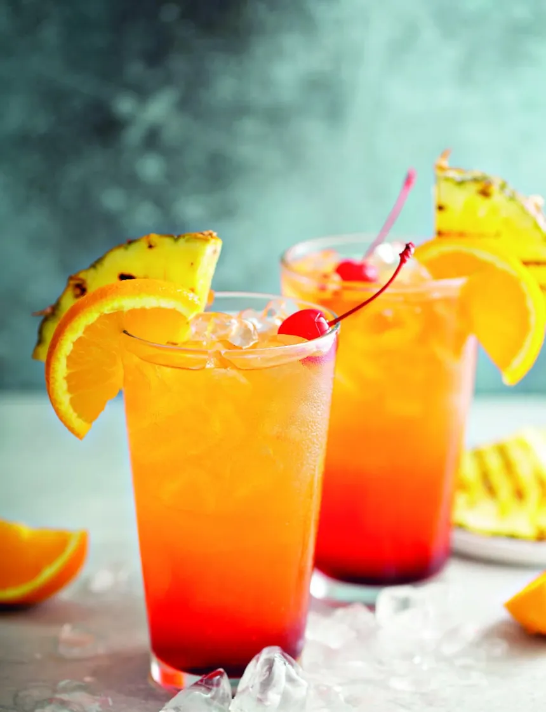

Le Bora-Bora est un mocktail exotique créé à New-York dans les années 1980. Il est élaboré à base de jus d'ananas, de jus de fruit de la passion, de jus de citron et de sirop de grenadine, sans alcool ou avec du rhum ou de la vodka.